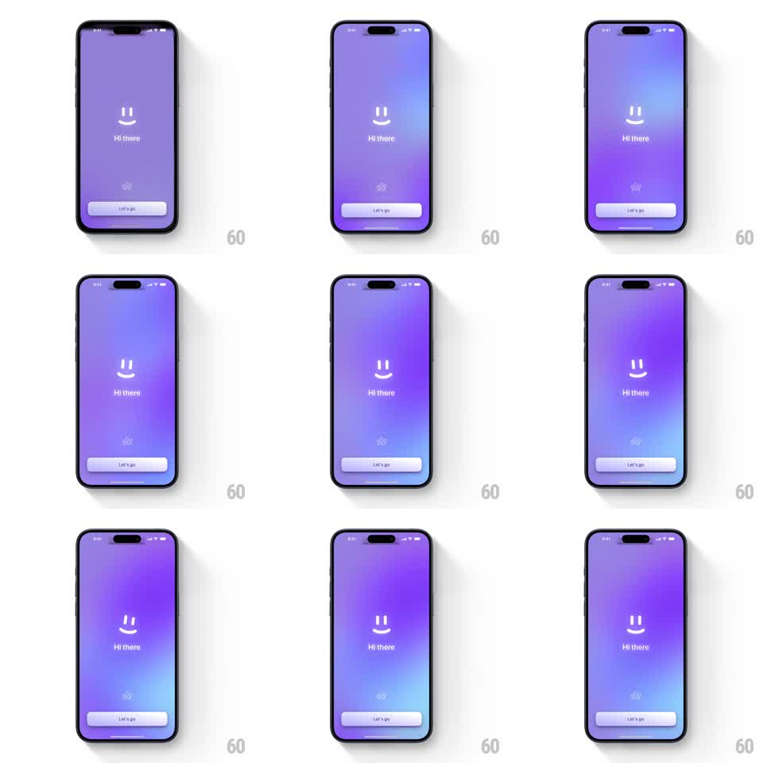

Media
Frame-by-frame

Rebuild this animation 1:1: Arc Search's onboarding splash - a minimalist smiley mascot on a vivid purple-blue gradient slowly winks one eye above a "Hi there" greeting and a "Let's go" button.

Rebuild this animation 1:1: Arc Search's onboarding splash - a minimalist smiley mascot on a vivid purple-blue gradient slowly winks one eye above a "Hi there" greeting and a "Let's go" button. ## Integration Integration: stack-agnostic spec - springs given as stiffness/damping, timed motions as duration + curve; map every value to your framework and animation library of choice. ## Scene Full-screen gradient drifting from violet at the top to cool blue at the bottom. Center: a white line-art smiley (two oval eyes over a wide curved smile). Below: "Hi there" in white, a small sparkle glyph further down, and a white pill "Let's go" button near the bottom. ## Motion spec Pattern: mascot wink on a living gradient. - The gradient breathes continuously: the color field drifts slowly (10 to 15s loop), shifting weight between violet and blue. - Idle: the smiley sits still for ~2 seconds. - Wink: one eye (the viewer's left) squashes shut - scaleY 1 to 0.1 over 120ms, ease-in - holds ~150ms, then reopens (150ms, ease-out). The other eye and the smile never move. - The cycle repeats every 3 to 4 seconds. - The greeting, sparkle, and button fade up once on entry (opacity + translateY 8px to 0, 300ms, staggered 80ms apart) and then stay static. ## Calibration - One eye only - squashing both reads as a blink, and this is a wink. - The wink should feel unhurried: a hold under 100ms reads as a glitch. ## Reduced motion Static smiley, static gradient; content fades in once. ## Don't miss - The smiley is line art, not filled shapes - keep stroke weight consistent as the eye squashes. - The gradient is the only color on screen; everything else is white.